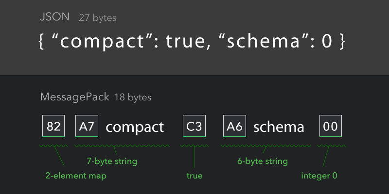

我在github上创建了一个Go语言序列化/反序列化库的性能比较的项目gosercomp，用来比较常见的Go语言生态圈的序列化库。
性能是以Go官方库提供的JSON/XML序列化库为基准，比较一下第三库能带来多大的性能提升。
尽管一些第三方库会自动产生Struct的代码，我们还是都以下面的数据结构为例：
|
|
其中Colors是一个slice。我并没有测试Struct嵌套以及循环引用的情况。
目前本项目包含了以下几种序列化库的性能比较：
- encoding/json
- encoding/xml
- github.com/youtube/vitess/go/bson
- github.com/tinylib/msgp
- github.com/golang/protobuf
- github.com/gogo/protobuf
- github.com/google/flatbuffers
- Apache/Thrift
- Apache/Avro
- andyleap/gencode
- ugorji/go/codec
对于序列化库的实现来讲，如果在运行时通过反射的方式进行序列化和反序列化，性能不会太好，比如官方库的Json和Xml序列化方法，所以高性能的序列化库很多都是通过代码生成在编译的时候提供序列化和反序列化的方法，下面我会介绍MessagePack和gencode两种性能较高的序列化库。
本项目受alecthomas/go_serialization_benchmarks项目的启发。
对于第三方的序列化库，它们的数据结构的定义可能是自有形式的，比如Thrift:
|
|
比如flatbuffers:
|
|
对于protobuf:
|
|
看以看出，所有测试的数据结构都是一致的，它包含三个字段，一个是int类型的字段Id,一个是string类型的字段Name，一个是[]string类型的字段Colors。
测试结果
完整的测试结果可以看这里,
以下是Json、Xml、Protobuf、MessagePack、gencode的性能数据：
|
|
可以看出Json、Xml的序列化和反序列化性能是很差的。想比较而言MessagePack有10x的性能的提升，而gencode比MessagePack的性能还要好很多。
MessagePack的实现
MessagePack是一个高效的二进制序列化格式。它可以在多种语言直接交换数据格式。它将对象可以序列化更小的格式，比如对于很小的整数，它可以使用更少的存储(一个字节)。对于短字符串，它只需一个额外的字节来指示。

上图是一个27个字节的JSON数据，如果使用MessagePack的话可以用18个字节就可以表示了。
可以看出每个类型需要额外的0到n个字节来指明(数量依赖对象的大小或者长度)。上面的例子中82指示这个对象是包含两个元素的map (0x80 + 2), A7 代表一个短长度的字符串，字符串长度是7。C3代表true，C2代表false，C0代表nil。00代表是一个小整数。
完整的格式可以参照官方规范。
MessagePack支持多种开发语言。
题外话，一个较新的RFC规范 CBOR/rfc7049 (简洁的二进制对象表示)定义了一个类似的规范，可以表达更详细的内容。
推荐使用的Go MessagePack库是 tinylib/msgp，它比ugorji/go有更好的性能。
tinylib/msgp提供了一个代码生成工具msgp，可以为Golang的Struct生成序列化的代码，当然你的Struct应该定义msg标签，如本文上面定义的ColorGroup。通过go generate就可以自动生成代码，如本项目中生成的msgp_gen.go:
|
|
生成的代码的使用类似官方库的Json和Xml，提供了Marshal和UnmarshalMsg的方法。
结合MessagePack的规范，可以看到MarshalMsg方法很简洁的，它使用了msgp.AppendXXX方法将相应的类型的数据写入到[]byte中，你可以预先分配/重用[]byte，这样可以实现 zero alloc。同时你也注意到，它也将字段的名字写入到序列化字节slice中，因此序列化后的数据包含对象的元数据。
反序列化的时候会读取字段的名字，再将相应的字节反序列化赋值给对象的相应的字段。
总体来说，MessagePack的性能已经相当高了，而且生成的数据也非常小，又是跨语言支持的，是值得关注的一个序列化库。
gencode
对于MessagePack还有没有可提升的空间？测试数据显示, andyleap/gencode的性能还要好，甚至于性能是MessagePack的两倍。
andyleap/gencode的目标也是提供快速而且数据很少的序列化库。
它定义了自有的数据格式，并提供工具生成Golang代码。
下面是我测试用的数据格式。
|
|
它提供了类似于Golang的数据类型struct，定义结构也类似， 并提供了一组数据类型。
你可以通过它的工具生成数据结构的代码：
|
|
和MessagePack一样的处理，对于大于或者等于0x80的整数，它会使用2个或者更多的字节来表示。
但是与MessagePack不同的是，它不会写入字段的名字，也就是它不包含对象的元数据。同时，它写入的额外数据只包含字段的长度，并不需要指明数据的类型。
所有的值都以它的长度做先导，并没有像MessagePack那样为了节省空间会对对象进行压缩处理，所以它的代码会更直接而有效。
当然它们的处理都是通过字节的移位或者copy对字符串直接进行拷贝，这样的处理也非常的高效。
反序列化的时候也是依次解析出各字段的值，因为在编译的时候已经知道每个字段的类型，所以gencode无需元数据，可以聪明的对字节按照流的方式顺序处理。
可以看出，gencode相对于MessagePack,本身并没有为数据中加入额外的元数据的信息，也无需写入字段的类型信息，这样也可以减少生成的数据大小,同时它不会对小整数、短字符串，小的Map进行刻意的压缩，减少的代码的复杂度和判断分支，代码更加的简练而高效。
值得注意的是，gencode生成的代码除了官方库外不依赖其它的第三方库。
从测试数据来看，它的性能更胜一筹。